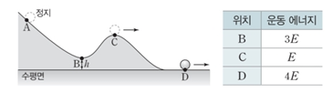

문제:
33. 그림과 같이 점 A에 가만히 놓은 물체가 궤도를 따라 운동하여 궤도상의 점 B, C를 통과하여 수평면상의 점 D를 지난다. B의 높이는 h이다. 표는 B, C, D에서 물체의 운동에너지이다.
이에 대한 설명으로 옳은 것만을 <보기>에서 있는 대로 고르시오. (단, 수평면에서 물체의 중력 퍼텐셜 에너지는 0이고, 물체의 크기, 모든 마찰과 공기 저항은 무시한다.)
ㄱ. 물체의 속력은 C에서가 D에서의 1/2배이다.
ㄴ. B에서 물체의 중력 퍼텐셜 에너지는 E이다.
ㄷ. A의 높이는 4h이다.